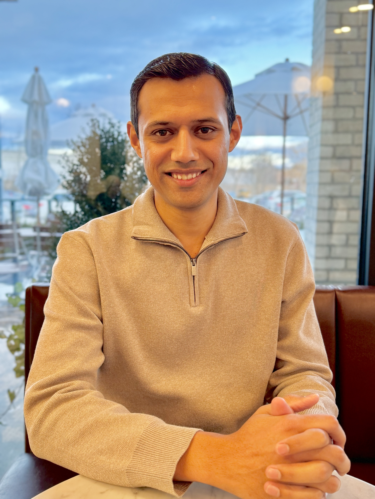
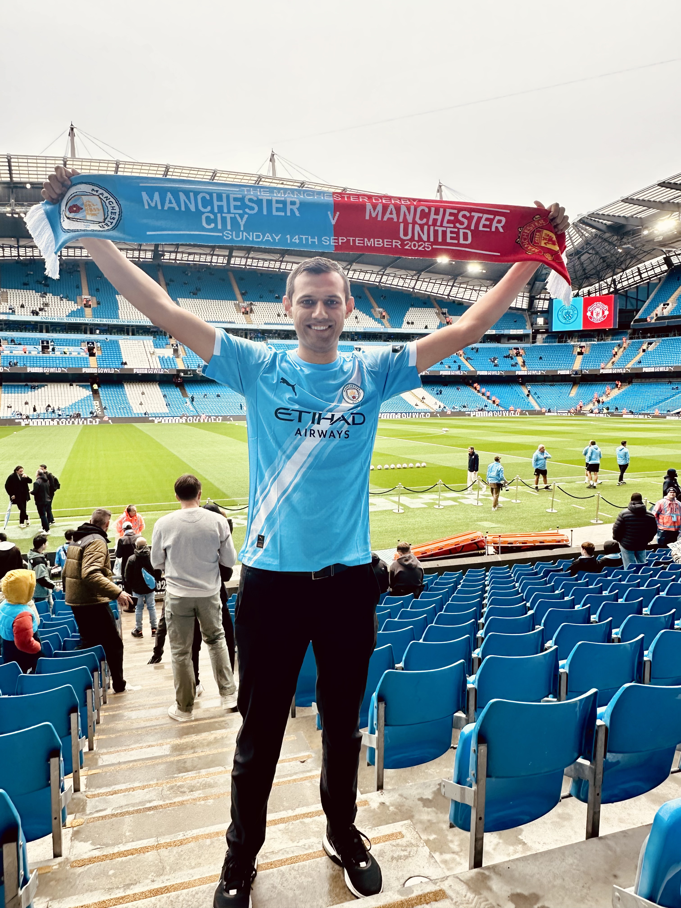
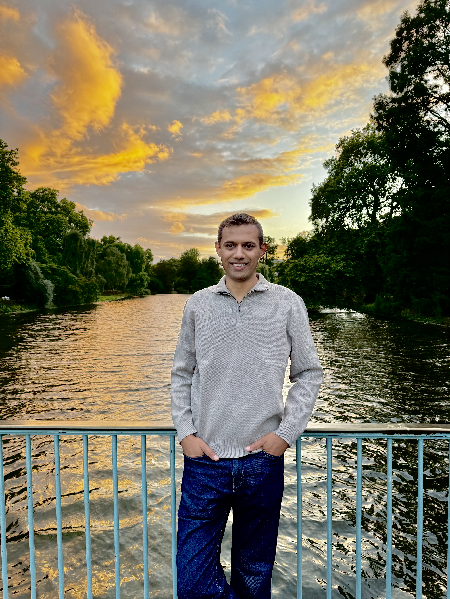
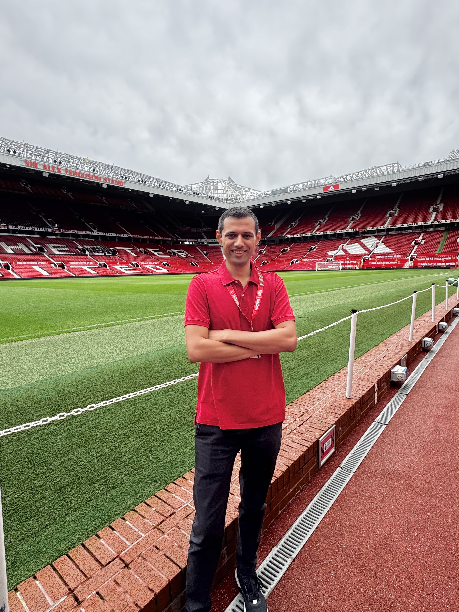
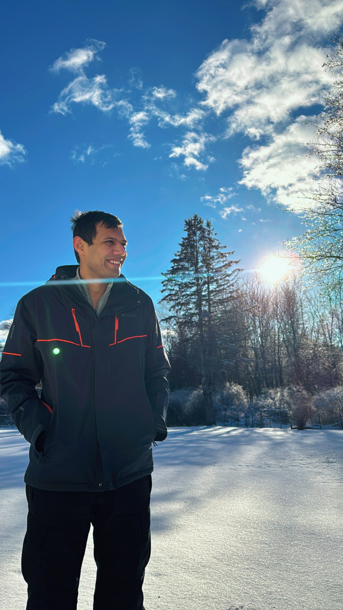
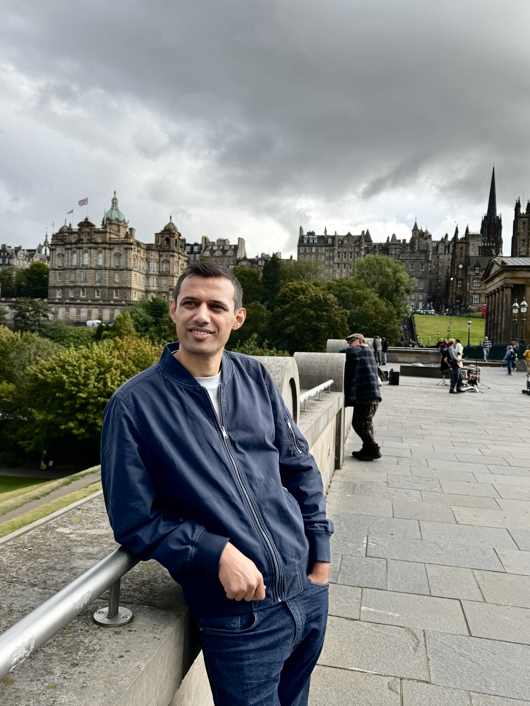
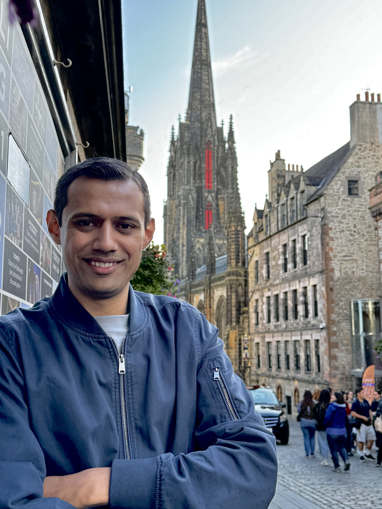
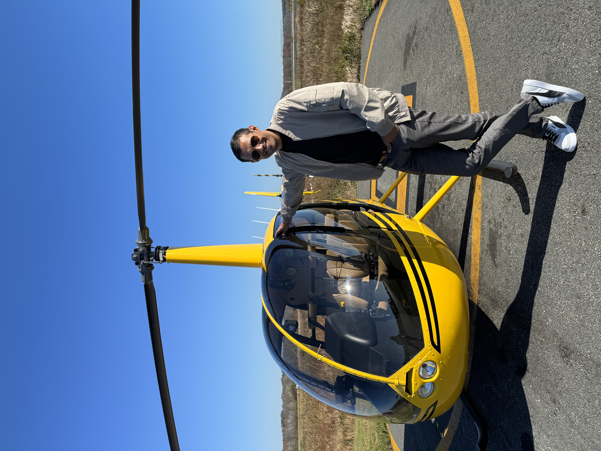

Hi there, I'm
I find beauty in the mathematics of wireless signals. From underwater acoustic channels to automotive radar to RF transceivers — and now shaping 5G NR systems at Apple. I turn complex signal theory into technology that billions of people rely on every day.

"Learn from yesterday, live for today, hope for tomorrow. The important thing is not to stop questioning."
— Albert Einstein, the inspiration behind this journeyMy fascination with signal processing began at BIT Mesra, when a lecture on Pulse Code Modulation and Time Division Multiplexing sparked something I couldn't ignore. I started asking questions that led me to research labs, design contests, and eventually graduate school.
After my third year I worked at IIT Patna studying underwater acoustic communication — MIMO, Alamouti codes, OFDM over Rayleigh and Rician fading channels. That hands-on research confirmed the direction I wanted to take.
I then spent two years at Verizon, joined Analog Devices to build signal processing algorithms for wide-band RF transceivers and automotive radar, and now at Apple I define 5G NR RF transmitter specifications and investigate 3GPP features shaping the next generation of wireless.
I hold an MSc in Electrical & Computer Engineering from Northeastern University (GPA 3.76/4.0), a B.E in Electronics & Communication from Birla Institute of Technology (GPA 8.15/10), and completed my 12th in Science at Narayna Junior College, Secunderabad (2008–2010).
Defining RF transmitter specs and 3GPP feature feasibility at Apple for next-gen wireless systems.
Adaptive calibration algorithms for wide-band transceivers — quadrature error, path delay, Kalman-based noise cancellation.
FMCW radar signal chains for autonomous vehicles with Monte Carlo simulation frameworks.
Real-data OFDM analysis of underwater channels — IEEE published at OCEANS 2018.
Over a decade of turning signal theory into real-world systems across three countries.
Formal certifications pursued to deepen the mathematical foundations behind the work.
Coursera / Imperial College London
Coursera / Imperial College London
edX Verified Certificate / MITx
Applied research translated into working systems during the MSc program (2016–2018).
Projects from BIT Mesra (2010–2014) that shaped the engineer and researcher I became.
Versek, C., Rissmiller, A., Tran, A., Taya, M., Chowdhury, K., Bex, P., & Sridhar, S. Military Medicine, 184(Supplement_1), 584–592. 2019.
28 citationsTadayon, A., Taya, M., & Stojanovic, M. 2021 Fifth Underwater Communications and Networking Conference (UComms). IEEE, 2021.
Taya, M., Tadayon, A., & Stojanovic, M. OCEANS 2018 MTS/IEEE Charleston. IEEE, 2018.
4 citationsTaya, M. MSc Dissertation, Northeastern University. 2018.
1 citationWork is what I do — this is who I am. Outside of signal equations and 3GPP specs, I'm an active, outdoorsy person with a pretty chill, zen attitude toward life. I love being in motion — whether that's chasing a ball on the soccer pitch, hiking up a trail with friends, setting up camp under the stars, or landing in a city I've never been to before. I'm always curious, always learning something new, and I genuinely believe life's too short not to enjoy the ride.







The beautiful game. I play regularly and never miss a big match. Old Trafford and the Etihad — been to both.
Give me a trail, good company, and a view at the top. Some of my best days have been on a mountain path with friends.
Off the grid, under the stars. There's something deeply refreshing about stepping away from screens and into nature.
Scotland, Europe, wherever the next trip takes me — I love immersing in new cultures, food, and places.
Whether it's a new certification, a new sport, or a random rabbit hole — curiosity is just how I'm wired.
Happy and chill is the vibe. I don't stress the small stuff — life's better when you're present in it.
Whether it's a collaboration, an opportunity, or just a conversation about signal processing — my inbox is always open.